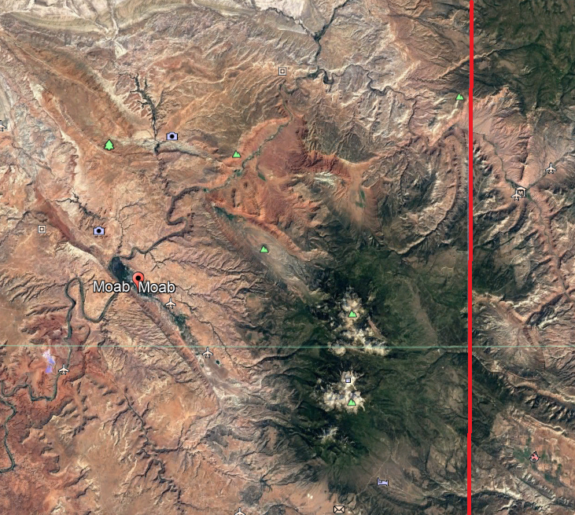
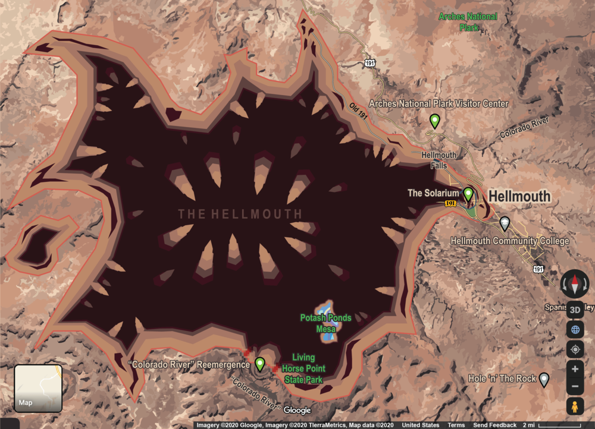

We at the HATB strongly discourage any visitation to the Hellmouth (previously Moab) region. The climate is extremely dangerous and inhospitable to all who enter.
In an effort to deter all tourism to the region, please review this educational information. This is not meant as a guide by any means, and should be used soley as cautionary media.
Exhibit A: The Hellmouth

Moab, Utah before the opening of the Forbidden Book.
The Hellmouth itself is a giant pit with many protruding teeth-like structures. During its creation, the Hellmouth consumed a majority of Moab, Utah, resulting in extremely high temps and a flourishing abnormal wildlife population.There is seemingly no end to it's depth. Many have thrown foreign objects into the Hellmouth, in complete non-compliance with all posted signage.

The Hellmouth.
Exhibit B: Giant Scorpions
Giant Scorpion attack.
Specimens of scorpion found in the Hellmouth area have been recorded as averaging 12m in length, with one specimen sighted over 20m. It is vital when spotting one of these creatures to immediately turn the opposite direction and run for as long as possible, only stopping when safely accross the Hellmouth border. A majority of the sightings have been in Arches National Park, all tours and visits are strictly prohibited at this time.
Exhibit C: Ominous Eateries
Seemingly normal Outback Steakhouse.
As most businesses were swallowed up by the emergence of the Hellmouth, those that have stayed have a unworldly presence against the barren desert landscape. One such locale is the Outback Steakhouse, perfectly in-tact on the edge of the Hellmouth's ring. Many ominous happenings have been reported from the Outback, the most recurring observation is a confluence of bones in every backroom. Another location of note is the Seven Heleven, a mysterious convenience store that takes it's role literally. Residents have reported that the 7-H11 appears seemingly at will whenever the person in question was in need of anything. Do not enter these establishments until further investigations have concluded their nature.
The multidimensional spacetime travelling Seven-Heleven.
Exhibit D: The Endless Feild of Sunflowers
The Unending Sunflower Feild
On the outskirts of town lies a seemingly inconspicuous feild of sunflowers, stretching as far as the eye can see. It is reported that any who enter never re-emerge. All attempts to circumvent the field have proven vain. A drone was dispatched over the feild, recording the most peculiar event of the sunflowers losing fidelity the further in one goes. By the time transmition was lost, the flowers appeared as nothing more than pixelated green and yellow planes.
Last shot of the flowers sent from the lost drone.
Exhibit E: The Adaptation
Adaptation: Horns
All surviving residents have undergone a transformative process known as Adaption. This can manifest in many ways, both physical and metaphysical. A common sighting is of horns protruding from the head. Other known Adaptions include: becoming plant matter, growing scales, changing from warm blooded to cold blooded, gaining wolf-like properties such as lycanthropy, transformation into smoke, possesion of telekentik abilities, access to the all-seeing-eye, and the ability to stay awake throughout an online class.
Adaptation: Smoke
Further Research Currently Underway
The moment right before the transformation of the Moab area.Evidence of precognition to the transformation?Non-HATB roadway sign, seemingly possesed.